トップ ／ 世界のFIFAランキング
世界のFIFAランキング全加盟国・男子・2026年10月7日発表・211か国・地域・次回2026年11月18日
| 順位 | 前回 | 国・地域 | 連盟内 | ポイント |
|---|---|---|---|---|
| 1 | → | ヨーロッパ 1位 | 2011.57 | |
| 2 | → | 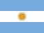 アルゼンチンArgentina | 南米 1位 | 1972.80 |
| 3 | → | ヨーロッパ 2位 | 1958.86 | |
| 4 | → | ヨーロッパ 3位 | 1925.59 | |
| 5 | ↑2 | ヨーロッパ 4位 | 1807.69 | |
| 6 | ↓1 | 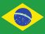 ブラジル対戦ありBrazil | 南米 2位 | 1806.51 |
| 7 | ↓1 | 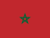 モロッコMorocco | アフリカ 1位 | 1805.34 |
| 8 | → | ヨーロッパ 5位 | 1779.17 | |
| 9 | → | ヨーロッパ 6位 | 1778.61 | |
| 10 | → | 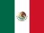 メキシコ対戦ありMexico | 北中米カリブ 1位 | 1738.48 |
| 11 | → | 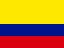 コロンビア対戦ありColombia | 南米 3位 | 1735.80 |
| 12 | ↑2 | スイスSwitzerland | ヨーロッパ 7位 | 1725.39 |
| 13 | ↓1 | ヨーロッパ 8位 | 1717.52 | |
| 14 | ↓1 | 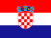 クロアチアCroatia | ヨーロッパ 9位 | 1714.74 |
| 15 | → | ヨーロッパ 10位 | 1713.04 | |
| 16 | → | アメリカ対戦ありUSA | 北中米カリブ 2位 | 1705.47 |
| 17 | → | アジア 1位 | 1684.75 | |
| 18 | → | 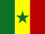 セネガルSenegal | アフリカ 2位 | 1648.84 |
| 19 | → | 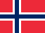 ノルウェーNorway | ヨーロッパ 11位 | 1637.89 |
| 20 | → | 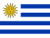 ウルグアイ対戦ありUruguay | 南米 4位 | 1635.54 |
| 21 | → | ヨーロッパ 12位 | 1619.62 | |
| 22 | ↑1 | ヨーロッパ 13位 | 1600.66 | |
| 23 | ↓1 | イラン対戦ありIR Iran | アジア 2位 | 1597.31 |
| 24 | ↑1 | 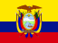 エクアドル対戦ありEcuador | 南米 5位 | 1587.07 |
| 25 | ↓1 | エジプトEgypt | アフリカ 3位 | 1585.86 |
| 26 | ↑2 | オーストラリア対戦ありAustralia | アジア 3位 | 1580.52 |
| 27 | ↑3 | カナダ対戦ありCanada | 北中米カリブ 3位 | 1575.31 |
| 28 | ↑1 | 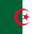 アルジェリアAlgeria | アフリカ 4位 | 1574.77 |
| 29 | ↑2 | 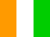 コートジボワールCôte d'Ivoire | アフリカ 5位 | 1569.32 |
| 30 | ↓4 | ナイジェリアNigeria | アフリカ 6位 | 1567.97 |
| 31 | ↓4 | トルコ対戦ありTürkiye | ヨーロッパ 14位 | 1563.54 |
| 32 | → | 韓国対戦ありKorea Republic | アジア 4位 | 1562.49 |
| 33 | ↑1 | 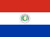 パラグアイ対戦ありParaguay | 南米 6位 | 1552.30 |
| 34 | ↑3 | 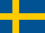 スウェーデン対戦ありSweden | ヨーロッパ 15位 | 1543.80 |
| 35 | → | 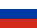 ロシアRussia | ヨーロッパ 16位 | 1537.45 |
| 36 | ↓3 | 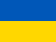 ウクライナUkraine | ヨーロッパ 17位 | 1535.27 |
| 37 | ↓1 | ヨーロッパ 18位 | 1514.58 | |
| 38 | ↑1 | 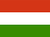 ハンガリーHungary | ヨーロッパ 19位 | 1511.24 |
| 39 | ↓1 | 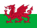 ウェールズWales | ヨーロッパ 20位 | 1510.37 |
| 40 | ↑1 | 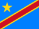 コンゴ民主共和国Congo DR | アフリカ 7位 | 1506.37 |
| 41 | ↑5 | ギリシャGreece | ヨーロッパ 21位 | 1498.71 |
| 42 | ↑1 | 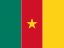 カメルーンCameroon | アフリカ 8位 | 1485.30 |
| 43 | ↓1 | ヨーロッパ 22位 | 1483.57 | |
| 44 | ↓4 | セルビアSerbia | ヨーロッパ 23位 | 1482.24 |
| 45 | → | スロバキアSlovakia | ヨーロッパ 24位 | 1477.34 |
| 46 | ↓2 | パナマPanama | 北中米カリブ 4位 | 1476.97 |
| 47 | ↑6 | 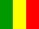 マリMali | アフリカ 9位 | 1474.14 |
| 48 | ↑6 | 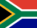 南アフリカSouth Africa | アフリカ 10位 | 1468.88 |
| 49 | ↓2 | 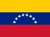 ベネズエラ対戦ありVenezuela | 南米 7位 | 1465.87 |
| 50 | ↓1 | チリChile | 南米 8位 | 1458.97 |
| 51 | ↓3 | チェコCzechia | ヨーロッパ 25位 | 1457.12 |
| 52 | ↑4 | 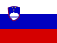 スロベニアSlovenia | ヨーロッパ 26位 | 1452.48 |
| 53 | ↓3 | ペルー対戦ありPeru | 南米 9位 | 1450.95 |
| 54 | ↓3 | 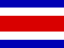 コスタリカCosta Rica | 北中米カリブ 5位 | 1444.85 |
| 55 | ↑3 | サウジアラビア対戦ありSaudi Arabia | アジア 5位 | 1443.17 |
| 56 | ↓1 | 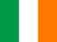 アイルランドRepublic of Ireland | ヨーロッパ 27位 | 1438.62 |
| 57 | ↑4 | ボスニア・ヘルツェゴビナBosnia and Herzegovina | ヨーロッパ 28位 | 1429.32 |
| 58 | ↓6 | 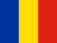 ルーマニアRomania | ヨーロッパ 29位 | 1428.88 |
| 59 | ↑1 | 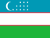 ウズベキスタンUzbekistan | アジア 6位 | 1416.61 |
| 60 | ↓1 | アジア 7位 | 1416.47 | |
| 61 | ↓4 | チュニジア対戦ありTunisia | アフリカ 11位 | 1415.38 |
| 62 | → | 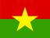 ブルキナファソBurkina Faso | アフリカ 12位 | 1407.80 |
| 63 | → | イラク対戦ありIraq | アジア 8位 | 1400.91 |
| 64 | ↑6 | 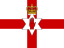 北アイルランドNorthern Ireland | ヨーロッパ 30位 | 1383.86 |
| 65 | ↑3 | 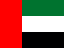 アラブ首長国連邦United Arab Emirates | アジア 9位 | 1376.95 |
| 66 | ↑1 | 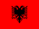 アルバニアAlbania | ヨーロッパ 31位 | 1375.78 |
| 67 | ↓1 | ホンジュラスHonduras | 北中米カリブ 6位 | 1375.40 |
| 68 | ↓4 | カーボベルデCabo Verde | アフリカ 13位 | 1373.58 |
| 69 | ↑2 | 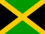 ジャマイカJamaica | 北中米カリブ 7位 | 1361.97 |
| 70 | ↓5 | ガーナ対戦ありGhana | アフリカ 14位 | 1361.27 |
| 71 | ↓2 | 北マケドニアNorth Macedonia | ヨーロッパ 32位 | 1350.91 |
| 72 | ↑1 | ヨルダンJordan | アジア 10位 | 1350.88 |
| 73 | ↑1 | 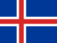 アイスランド対戦ありIceland | ヨーロッパ 33位 | 1349.42 |
| 74 | ↓2 | 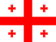 ジョージアGeorgia | ヨーロッパ 34位 | 1345.88 |
| 75 | → | フィンランドFinland | ヨーロッパ 35位 | 1340.73 |
| 76 | ↑2 | コソボKosovo | ヨーロッパ 36位 | 1328.14 |
| 77 | ↓1 | イスラエルIsrael | ヨーロッパ 37位 | 1325.52 |
| 78 | ↓1 | 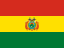 ボリビア対戦ありBolivia | 南米 10位 | 1322.19 |
| 79 | ↑1 | 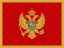 モンテネグロMontenegro | ヨーロッパ 38位 | 1315.49 |
| 80 | ↑2 | キュラソーCuraçao | 北中米カリブ 8位 | 1304.98 |
| 81 | ↓2 | 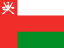 オマーンOman | アジア 11位 | 1302.77 |
| 82 | ↓1 | 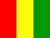 ギニアGuinea | アフリカ 15位 | 1296.67 |
| 83 | ↑4 | 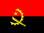 アンゴラAngola | アフリカ 16位 | 1281.79 |
| 84 | ↑4 | 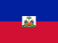 ハイチHaiti | 北中米カリブ 9位 | 1280.91 |
| 85 | ↓1 | 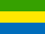 ガボンGabon | アフリカ 17位 | 1280.12 |
| 86 | ↓3 | アジア 12位 | 1279.94 | |
| 87 | ↑2 | 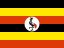 ウガンダUganda | アフリカ 18位 | 1278.26 |
| 88 | ↓2 | 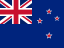 ニュージーランド対戦ありNew Zealand | オセアニア 1位 | 1277.02 |
| 89 | ↑4 | 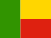 ベナンBenin | アフリカ 19位 | 1266.01 |
| 90 | ↓5 | 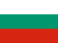 ブルガリアBulgaria | ヨーロッパ 39位 | 1262.57 |
| 91 | ↓1 | 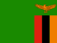 ザンビアZambia | アフリカ 20位 | 1260.61 |
| 92 | ↑3 | パレスチナPalestine | アジア 13位 | 1253.75 |
| 93 | ↑1 | 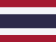 タイ対戦ありThailand | アジア 14位 | 1251.42 |
| 94 | ↑2 | 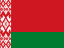 ベラルーシBelarus | ヨーロッパ 40位 | 1249.60 |
| 95 | ↑2 | 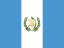 グアテマラGuatemala | 北中米カリブ 10位 | 1245.10 |
| 96 | ↓5 | 中国対戦ありChina PR | アジア 15位 | 1241.90 |
| 97 | ↓5 | バーレーン対戦ありBahrain | アジア 16位 | 1240.30 |
| 98 | ↑5 | モザンビークMozambique | アフリカ 21位 | 1238.23 |
| 99 | → | ベトナム対戦ありVietnam | アジア 17位 | 1231.29 |
| 100 | ↑1 | タジキスタンTajikistan | アジア 18位 | 1218.88 |
| 101 | ↓3 | ルクセンブルクLuxembourg | ヨーロッパ 41位 | 1218.80 |
| 102 | ↓2 | エルサルバドル対戦ありEl Salvador | 北中米カリブ 11位 | 1212.40 |
| 103 | ↑2 | 赤道ギニアEquatorial Guinea | アフリカ 22位 | 1200.39 |
| 104 | ↑2 | キルギスKyrgyz Republic | アジア 19位 | 1199.73 |
| 105 | ↓3 | トリニダード・トバゴTrinidad and Tobago | 北中米カリブ 12位 | 1198.85 |
| 106 | ↓2 | マダガスカルMadagascar | アフリカ 23位 | 1197.24 |
| 107 | ↑1 | コモロComoros | アフリカ 24位 | 1192.28 |
| 108 | ↓1 | アルメニアArmenia | ヨーロッパ 42位 | 1183.26 |
| 109 | ↑7 | ガンビアGambia | アフリカ 25位 | 1182.64 |
| 110 | ↑3 | モーリタニアMauritania | アフリカ 26位 | 1176.05 |
| 111 | ↑3 | ニジェールNiger | アフリカ 27位 | 1172.93 |
| 112 | ↑3 | レバノンLebanon | アジア 20位 | 1170.30 |
| 113 | ↓3 | リビアLibya | アフリカ 28位 | 1168.89 |
| 114 | ↓5 | ケニアKenya | アフリカ 29位 | 1168.67 |
| 115 | ↓3 | タンザニアTanzania | アフリカ 30位 | 1166.82 |
| 116 | ↑2 | インドネシア対戦ありIndonesia | アジア 21位 | 1166.50 |
| 117 | ↓6 | カザフスタンKazakhstan | ヨーロッパ 43位 | 1166.26 |
| 118 | ↓1 | スーダンSudan | アフリカ 31位 | 1156.74 |
| 119 | ↑9 | ルワンダRwanda | アフリカ 32位 | 1156.16 |
| 120 | ↓1 | トーゴTogo | アフリカ 33位 | 1153.04 |
| 121 | ↓1 | 北朝鮮対戦ありKorea DPR | アジア 22位 | 1151.05 |
| 122 | ↑5 | エストニアEstonia | ヨーロッパ 44位 | 1147.12 |
| 123 | ↓2 | ナミビアNamibia | アフリカ 34位 | 1146.48 |
| 124 | ↑8 | ギニアビサウGuinea-Bissau | アフリカ 35位 | 1144.03 |
| 125 | ↓1 | キプロスCyprus | ヨーロッパ 45位 | 1142.43 |
| 126 | ↓3 | フェロー諸島Faroe Islands | ヨーロッパ 46位 | 1140.10 |
| 127 | ↓1 | アゼルバイジャンAzerbaijan | ヨーロッパ 47位 | 1138.96 |
| 128 | ↓3 | スリナムSuriname | 北中米カリブ 13位 | 1138.46 |
| 129 | ↑1 | ジンバブエZimbabwe | アフリカ 36位 | 1128.05 |
| 130 | ↓8 | シエラレオネSierra Leone | アフリカ 37位 | 1123.20 |
| 131 | ↓2 | マラウイMalawi | アフリカ 38位 | 1121.84 |
| 132 | ↑2 | コンゴ共和国Congo | アフリカ 39位 | 1102.46 |
| 133 | ↑3 | マレーシアMalaysia | アジア 23位 | 1102.09 |
| 134 | ↓1 | クウェートKuwait | アジア 24位 | 1098.64 |
| 135 | ↑9 | ドミニカ共和国Dominican Republic | 北中米カリブ 14位 | 1096.58 |
| 136 | ↓1 | フィリピンPhilippines | アジア 25位 | 1095.85 |
| 137 | ↓6 | ニカラグアNicaragua | 北中米カリブ 15位 | 1090.80 |
| 138 | → | インドIndia | アジア 26位 | 1086.43 |
| 139 | ↑2 | トルクメニスタンTurkmenistan | アジア 27位 | 1078.65 |
| 140 | ↑2 | ブルンジBurundi | アフリカ 40位 | 1076.75 |
| 141 | ↑6 | ボツワナBotswana | アフリカ 41位 | 1073.85 |
| 142 | ↑8 | ガイアナGuyana | 北中米カリブ 16位 | 1071.38 |
| 143 | ↓6 | ラトビアLatvia | ヨーロッパ 48位 | 1069.33 |
| 144 | ↑1 | イエメンYemen | アジア 28位 | 1067.53 |
| 145 | ↓6 | 中央アフリカCentral African Republic | アフリカ 42位 | 1065.15 |
| 146 | ↓6 | リベリアLiberia | アフリカ 43位 | 1064.58 |
| 147 | ↓4 | エチオピアEthiopia | アフリカ 44位 | 1064.46 |
| 148 | ↑1 | リトアニアLithuania | ヨーロッパ 49位 | 1059.28 |
| 149 | ↓1 | シンガポールSingapore | アジア 29位 | 1058.95 |
| 150 | ↓4 | レソトLesotho | アフリカ 45位 | 1053.09 |
| 151 | ↑1 | セントクリストファー・ネイビスSt Kitts and Nevis | 北中米カリブ 17位 | 1041.42 |
| 152 | ↑1 | ソロモン諸島Solomon Islands | オセアニア 2位 | 1035.95 |
| 153 | ↑3 | ホンコン・チャイナ対戦ありHong Kong China | アジア 30位 | 1035.23 |
| 154 | ↑1 | フィジーFiji | オセアニア 3位 | 1033.44 |
| 155 | ↓1 | プエルトリコPuerto Rico | 北中米カリブ 18位 | 1032.97 |
| 156 | ↓5 | ニューカレドニアNew Caledonia | オセアニア 4位 | 1026.01 |
| 157 | → | タヒチTahiti | オセアニア 5位 | 1016.32 |
| 158 | ↑1 | モルドバMoldova | ヨーロッパ 50位 | 1015.57 |
| 159 | ↓1 | アジア 31位 | 1008.08 | |
| 160 | ↑1 | マルタMalta | ヨーロッパ 51位 | 1006.80 |
| 161 | ↓1 | バヌアツVanuatu | オセアニア 6位 | 1005.90 |
| 162 | → | アンティグア・バーブーダAntigua and Barbuda | 北中米カリブ 19位 | 992.54 |
| 163 | ↑1 | キューバCuba | 北中米カリブ 20位 | 990.46 |
| 164 | ↑1 | エスワティニEswatini | アフリカ 46位 | 979.01 |
| 165 | ↑1 | セントルシアSt Lucia | 北中米カリブ 21位 | 975.85 |
| 166 | ↑4 | セントビンセント・グレナディーンSt Vincent and the Grenadines | 北中米カリブ 22位 | 974.89 |
| 167 | ↑1 | パプアニューギニアPapua New Guinea | オセアニア 7位 | 969.14 |
| 168 | ↑3 | アフガニスタンAfghanistan | アジア 32位 | 968.07 |
| 169 | ↓6 | グレナダGrenada | 北中米カリブ 23位 | 967.71 |
| 170 | ↓1 | 南スーダンSouth Sudan | アフリカ 47位 | 959.91 |
| 171 | ↓4 | バミューダ諸島Bermuda | 北中米カリブ 24位 | 951.28 |
| 172 | ↑4 | モントセラトMontserrat | 北中米カリブ 25位 | 939.13 |
| 173 | → | モルディブMaldives | アジア 33位 | 935.93 |
| 174 | ↑5 | バルバドスBarbados | 北中米カリブ 26位 | 934.52 |
| 175 | ↓3 | アンドラAndorra | ヨーロッパ 52位 | 927.53 |
| 176 | ↓2 | チャイニーズ・タイペイChinese Taipei | アジア 34位 | 923.78 |
| 177 | ↓2 | カンボジアCambodia | アジア 35位 | 920.83 |
| 178 | ↓1 | ネパールNepal | アジア 36位 | 914.54 |
| 179 | ↓1 | モーリシャスMauritius | アフリカ 48位 | 906.24 |
| 180 | → | ベリーズBelize | 北中米カリブ 27位 | 900.38 |
| 181 | ↑2 | チャドChad | アフリカ 49位 | 896.85 |
| 182 | ↓1 | バングラデシュBangladesh | アジア 37位 | 893.46 |
| 183 | ↑1 | エリトリアEritrea | アフリカ 50位 | 890.97 |
| 184 | ↑3 | スリランカSri Lanka | アジア 38位 | 890.64 |
| 185 | ↑4 | アルバAruba | 北中米カリブ 28位 | 889.53 |
| 186 | ↓4 | ドミニカ国Dominica | 北中米カリブ 29位 | 884.58 |
| 187 | ↓1 | クック諸島Cook Islands | オセアニア 8位 | 880.25 |
| 188 | ↓3 | ラオスLaos | アジア 39位 | 880.17 |
| 189 | ↓1 | サモアSamoa | オセアニア 9位 | 876.41 |
| 190 | → | モンゴルMongolia | アジア 40位 | 874.47 |
| 191 | → | アメリカ領サモアAmerican Samoa | オセアニア 10位 | 871.61 |
| 192 | → | ブータンBhutan | アジア 41位 | 870.81 |
| 193 | → | マカオMacau | アジア 42位 | 858.03 |
| 194 | ↑1 | サントメ・プリンシペSão Tomé and Príncipe | アフリカ 51位 | 855.10 |
| 195 | ↑1 | ジブチDjibouti | アフリカ 52位 | 853.58 |
| 196 | ↓2 | ブルネイBrunei Darussalam | アジア 43位 | 849.56 |
| 197 | ↑1 | パキスタンPakistan | アジア 44位 | 839.03 |
| 198 | ↓1 | ケイマン諸島Cayman Islands | 北中米カリブ 30位 | 836.15 |
| 199 | ↑1 | トンガTonga | オセアニア 11位 | 835.64 |
| 200 | ↓1 | ソマリアSomalia | アフリカ 53位 | 832.14 |
| 201 | ↑1 | ジブラルタルGibraltar | ヨーロッパ 53位 | 829.49 |
| 202 | ↓1 | 東ティモールTimor-Leste | アジア 45位 | 823.16 |
| 203 | → | グアムGuam | アジア 46位 | 819.54 |
| 204 | ↑1 | タークス・カイコス諸島Turks and Caicos Islands | 北中米カリブ 31位 | 806.26 |
| 205 | ↓1 | セーシェルSeychelles | アフリカ 54位 | 795.63 |
| 206 | ↑2 | アメリカ領ヴァージン諸島US Virgin Islands | 北中米カリブ 32位 | 794.75 |
| 207 | ↓1 | リヒテンシュタインLiechtenstein | ヨーロッパ 54位 | 790.18 |
| 208 | ↓1 | バハマBahamas | 北中米カリブ 33位 | 771.83 |
| 209 | → | イギリス領ヴァージン諸島British Virgin Islands | 北中米カリブ 34位 | 752.75 |
| 210 | → | アンギラAnguilla | 北中米カリブ 35位 | 736.67 |
| 211 | → | サンマリノSan Marino | ヨーロッパ 55位 | 715.93 |
見つかりませんでした。
FIFA（国際サッカー連盟）が発表する男子のランキング（FIFA/Coca-Cola Men's World Ranking）。値は報道・集計サイトで確かめたものです。最新の公式の順位はFIFAの発表で確認してください。「対戦あり」は収録している試合で日本が対戦した国です。